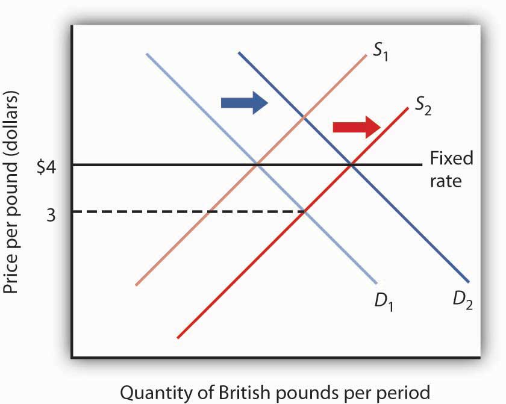

Exchange rates are determined by demand and supply. But governments can influence those exchange rates in various ways. The extent and nature of government involvement in currency markets define alternative systems of exchange rates. In this section we will examine some common systems and explore some of their macroeconomic implications.
There are three broad categories of exchange rate systems. In one system, exchange rates are set purely by private market forces with no government involvement. Values change constantly as the demand for and supply of currencies fluctuate. In another system, currency values are allowed to change, but governments participate in currency markets in an effort to influence those values. Finally, governments may seek to fix the values of their currencies, either through participation in the market or through regulatory policy.
In a free-floating exchange rate systemSystem in which governments and central banks do not participate in the market for foreign exchange., governments and central banks do not participate in the market for foreign exchange. The relationship between governments and central banks on the one hand and currency markets on the other is much the same as the typical relationship between these institutions and stock markets. Governments may regulate stock markets to prevent fraud, but stock values themselves are left to float in the market. The U.S. government, for example, does not intervene in the stock market to influence stock prices.
The concept of a completely free-floating exchange rate system is a theoretical one. In practice, all governments or central banks intervene in currency markets in an effort to influence exchange rates. Some countries, such as the United States, intervene to only a small degree, so that the notion of a free-floating exchange rate system comes close to what actually exists in the United States.
A free-floating system has the advantage of being self-regulating. There is no need for government intervention if the exchange rate is left to the market. Market forces also restrain large swings in demand or supply. Suppose, for example, that a dramatic shift in world preferences led to a sharply increased demand for goods and services produced in Canada. This would increase the demand for Canadian dollars, raise Canada’s exchange rate, and make Canadian goods and services more expensive for foreigners to buy. Some of the impact of the swing in foreign demand would thus be absorbed in a rising exchange rate. In effect, a free-floating exchange rate acts as a buffer to insulate an economy from the impact of international events.
The primary difficulty with free-floating exchange rates lies in their unpredictability. Contracts between buyers and sellers in different countries must not only reckon with possible changes in prices and other factors during the lives of those contracts, they must also consider the possibility of exchange rate changes. An agreement by a U.S. distributor to purchase a certain quantity of Canadian lumber each year, for example, will be affected by the possibility that the exchange rate between the Canadian dollar and the U.S. dollar will change while the contract is in effect. Fluctuating exchange rates make international transactions riskier and thus increase the cost of doing business with other countries.
Governments and central banks often seek to increase or decrease their exchange rates by buying or selling their own currencies. Exchange rates are still free to float, but governments try to influence their values. Government or central bank participation in a floating exchange rate system is called a managed floatGovernment or central bank participation in a floating exchange rate system..
Countries that have a floating exchange rate system intervene from time to time in the currency market in an effort to raise or lower the price of their own currency. Typically, the purpose of such intervention is to prevent sudden large swings in the value of a nation’s currency. Such intervention is likely to have only a small impact, if any, on exchange rates. Roughly $1.5 trillion worth of currencies changes hands every day in the world market; it is difficult for any one agency—even an agency the size of the U.S. government or the Fed—to force significant changes in exchange rates.
Still, governments or central banks can sometimes influence their exchange rates. Suppose the price of a country’s currency is rising very rapidly. The country’s government or central bank might seek to hold off further increases in order to prevent a major reduction in net exports. An announcement that a further increase in its exchange rate is unacceptable, followed by sales of that country’s currency by the central bank in order to bring its exchange rate down, can sometimes convince other participants in the currency market that the exchange rate will not rise further. That change in expectations could reduce demand for and increase supply of the currency, thus achieving the goal of holding the exchange rate down.
In a fixed exchange rate systemSystem in which the exchange rate between two currencies is set by government policy., the exchange rate between two currencies is set by government policy. There are several mechanisms through which fixed exchange rates may be maintained. Whatever the system for maintaining these rates, however, all fixed exchange rate systems share some important features.
In a commodity standard systemSystem in which countries fix the value of their respective currencies relative to a certain commodity or group of commodities., countries fix the value of their respective currencies relative to a certain commodity or group of commodities. With each currency’s value fixed in terms of the commodity, currencies are fixed relative to one another.
For centuries, the values of many currencies were fixed relative to gold. Suppose, for example, that the price of gold were fixed at $20 per ounce in the United States. This would mean that the government of the United States was committed to exchanging 1 ounce of gold to anyone who handed over $20. (That was the case in the United States—and $20 was roughly the price—up to 1933.) Now suppose that the exchange rate between the British pound and gold was £5 per ounce of gold. With £5 and $20 both trading for 1 ounce of gold, £1 would exchange for $4. No one would pay more than $4 for £1, because $4 could always be exchanged for 1/5 ounce of gold, and that gold could be exchanged for £1. And no one would sell £1 for less than $4, because the owner of £1 could always exchange it for 1/5 ounce of gold, which could be exchanged for $4. In practice, actual currency values could vary slightly from the levels implied by their commodity values because of the costs involved in exchanging currencies for gold, but these variations are slight.
Under the gold standard, the quantity of money was regulated by the quantity of gold in a country. If, for example, the United States guaranteed to exchange dollars for gold at the rate of $20 per ounce, it could not issue more money than it could back up with the gold it owned.
The gold standard was a self-regulating system. Suppose that at the fixed exchange rate implied by the gold standard, the supply of a country’s currency exceeded the demand. That would imply that spending flowing out of the country exceeded spending flowing in. As residents supplied their currency to make foreign purchases, foreigners acquiring that currency could redeem it for gold, since countries guaranteed to exchange gold for their currencies at a fixed rate. Gold would thus flow out of the country running a deficit. Given an obligation to exchange the country’s currency for gold, a reduction in a country’s gold holdings would force it to reduce its money supply. That would reduce aggregate demand in the country, lowering income and the price level. But both of those events would increase net exports in the country, eliminating the deficit in the balance of payments. Balance would be achieved, but at the cost of a recession. A country with a surplus in its balance of payments would experience an inflow of gold. That would boost its money supply and increase aggregate demand. That, in turn, would generate higher prices and higher real GDP. Those events would reduce net exports and correct the surplus in the balance of payments, but again at the cost of changes in the domestic economy.
Because of this tendency for imbalances in a country’s balance of payments to be corrected only through changes in the entire economy, nations began abandoning the gold standard in the 1930s. That was the period of the Great Depression, during which world trade virtually was ground to a halt. World War II made the shipment of goods an extremely risky proposition, so trade remained minimal during the war. As the war was coming to an end, representatives of the United States and its allies met in 1944 at Bretton Woods, New Hampshire, to fashion a new mechanism through which international trade could be financed after the war. The system was to be one of fixed exchange rates, but with much less emphasis on gold as a backing for the system.
In recent years, a number of countries have set up currency board arrangementsFixed exchange rate systems in which there is explicit legislative commitment to exchange domestic currency for a specified foreign currency at a fixed rate., which are a kind of commodity standard, fixed exchange rate system in which there is explicit legislative commitment to exchange domestic currency for a specified foreign currency at a fixed rate and a currency board to ensure fulfillment of the legal obligations this arrangement entails. In its simplest form, this type of arrangement implies that domestic currency can be issued only when the currency board has an equivalent amount of the foreign currency to which the domestic currency is pegged. With a currency board arrangement, the country’s ability to conduct independent monetary policy is severely limited. It can create reserves only when the currency board has an excess of foreign currency. If the currency board is short of foreign currency, it must cut back on reserves.
Argentina established a currency board in 1991 and fixed its currency to the U.S. dollar. For an economy plagued in the 1980s with falling real GDP and rising inflation, the currency board served to restore confidence in the government’s commitment to stabilization policies and to a restoration of economic growth. The currency board seemed to work well for Argentina for most of the 1990s, as inflation subsided and growth of real GDP picked up.
The drawbacks of a currency board are essentially the same as those associated with the gold standard. Faced with a decrease in consumption, investment, and net exports in 1999, Argentina could not use monetary and fiscal policies to try to shift its aggregate demand curve to the right. It abandoned the system in 2002.
The Bretton Woods Agreement called for each currency’s value to be fixed relative to other currencies. The mechanism for maintaining these rates, however, was to be intervention by governments and central banks in the currency market.
Again suppose that the exchange rate between the dollar and the British pound is fixed at $4 per £1. Suppose further that this rate is an equilibrium rate, as illustrated in Figure 30.5 "Maintaining a Fixed Exchange Rate Through Intervention". As long as the fixed rate coincides with the equilibrium rate, the fixed exchange rate operates in the same fashion as a free-floating rate.
Figure 30.5 Maintaining a Fixed Exchange Rate Through Intervention
Initially, the equilibrium price of the British pound equals $4, the fixed rate between the pound and the dollar. Now suppose an increased supply of British pounds lowers the equilibrium price of the pound to $3. The Bank of England could purchase pounds by selling dollars in order to shift the demand curve for pounds to D2. Alternatively, the Fed could shift the demand curve to D2 by buying pounds.
Now suppose that the British choose to purchase more U.S. goods and services. The supply curve for pounds increases, and the equilibrium exchange rate for the pound (in terms of dollars) falls to, say, $3. Under the terms of the Bretton Woods Agreement, Britain and the United States would be required to intervene in the market to bring the exchange rate back to the rate fixed in the agreement, $4. If the adjustment were to be made by the British central bank, the Bank of England, it would have to purchase pounds. It would do so by exchanging dollars it had previously acquired in other transactions for pounds. As it sold dollars, it would take in checks written in pounds. When a central bank sells an asset, the checks that come into the central bank reduce the money supply and bank reserves in that country. We saw in the chapter explaining the money supply, for example, that the sale of bonds by the Fed reduces the U.S. money supply. Similarly, the sale of dollars by the Bank of England would reduce the British money supply. In order to bring its exchange rate back to the agreed-to level, Britain would have to carry out a contractionary monetary policy.
Alternatively, the Fed could intervene. It could purchase pounds, writing checks in dollars. But when a central bank purchases assets, it adds reserves to the system and increases the money supply. The United States would thus be forced to carry out an expansionary monetary policy.
Domestic disturbances created by efforts to maintain fixed exchange rates brought about the demise of the Bretton Woods system. Japan and West Germany gave up the effort to maintain the fixed values of their currencies in the spring of 1971 and announced they were withdrawing from the Bretton Woods system. President Richard Nixon pulled the United States out of the system in August of that year, and the system collapsed. An attempt to revive fixed exchange rates in 1973 collapsed almost immediately, and the world has operated largely on a managed float ever since.
Under the Bretton Woods system, the United States had redeemed dollars held by other governments for gold; President Nixon terminated that policy as he withdrew the United States from the Bretton Woods system. The dollar is no longer backed by gold.
Fixed exchange rate systems offer the advantage of predictable currency values—when they are working. But for fixed exchange rates to work, the countries participating in them must maintain domestic economic conditions that will keep equilibrium currency values close to the fixed rates. Sovereign nations must be willing to coordinate their monetary and fiscal policies. Achieving that kind of coordination among independent countries can be a difficult task.
The fact that coordination of monetary and fiscal policies is difficult does not mean it is impossible. Eleven members of the European Union not only agreed to fix their exchange rates to one another, they agreed to adopt a common currency, the euro. The new currency was introduced in 1998 and became fully adopted in 1999. Since then, six other nations have joined. The nations that adopted it agreed to strict limits on their fiscal policies. Each continues to have its own central bank, but these national central banks operate similarly to the regional banks of the Federal Reserve System in the United States. The new European Central Bank conducts monetary policy throughout the area. Details of this revolutionary venture and the extraordinary problems it has encountered in recent years are provided in the accompanying Case in Point.
When exchange rates are fixed but fiscal and monetary policies are not coordinated, equilibrium exchange rates can move away from their fixed levels. Once exchange rates start to diverge, the effort to force currencies up or down through market intervention can be extremely disruptive. And when countries suddenly decide to give that effort up, exchange rates can swing sharply in one direction or another. When that happens, the main virtue of fixed exchange rates, their predictability, is lost.
Thailand’s experience with the baht illustrates the potential difficulty with attempts to maintain a fixed exchange rate. Thailand’s central bank had held the exchange rate between the dollar and the baht steady, at a price for the baht of $0.04. Several factors, including weakness in the Japanese economy, reduced the demand for Thai exports and thus reduced the demand for the baht, as shown in Panel (a) of Figure 30.6 "The Anatomy of a Currency Collapse". Thailand’s central bank, committed to maintaining the price of the baht at $0.04, bought baht to increase the demand, as shown in Panel (b). Central banks buy their own currency using their reserves of foreign currencies. We have seen that when a central bank sells bonds, the money supply falls. When it sells foreign currency, the result is no different. Sales of foreign currency by Thailand’s central bank in order to purchase the baht thus reduced Thailand’s money supply and reduced the bank’s holdings of foreign currencies. As currency traders began to suspect that the bank might give up its effort to hold the baht’s value, they sold baht, shifting the supply curve to the right, as shown in Panel (c). That forced the central bank to buy even more baht—selling even more foreign currency—until it finally gave up the effort and allowed the baht to become a free-floating currency. By the end of 1997, the baht had lost nearly half its value relative to the dollar.
Figure 30.6 The Anatomy of a Currency Collapse

Weakness in the Japanese economy, among other factors, led to a reduced demand for the baht (Panel [a]). That put downward pressure on the baht’s value relative to other currencies. Committed to keeping the price of the baht at $0.04, Thailand’s central bank bought baht to increase the demand, as shown in Panel (b). However, as holders of baht and other Thai assets began to fear that the central bank might give up its effort to prop up the baht, they sold baht, shifting the supply curve for baht to the right (Panel [c]) and putting more downward pressure on the baht’s price. Finally, in July of 1997, the central bank gave up its effort to prop up the currency. By the end of the year, the baht’s dollar value had fallen to about $0.02.
As we saw in the introduction to this chapter, the plunge in the baht was the first in a chain of currency crises that rocked the world in 1997 and 1998. International trade has the great virtue of increasing the availability of goods and services to the world’s consumers. But financing trade—and the way nations handle that financing—can create difficulties.
Suppose a nation’s central bank is committed to holding the value of its currency, the mon, at $2 per mon. Suppose further that holders of the mon fear that its value is about to fall and begin selling mon to purchase U.S. dollars. What will happen in the market for mon? Explain your answer carefully, and illustrate it using a demand and supply graph for the market for mon. What action will the nation’s central bank take? Use your graph to show the result of the central bank’s action. Why might this action fuel concern among holders of the mon about its future prospects? What difficulties will this create for the nation’s central bank?
It was the most dramatic development in international finance since the collapse of the Bretton Woods system. A new currency, the euro, began trading among 11 European nations—Austria, Belgium, Finland, France, Germany, Ireland, Italy, Luxembourg, the Netherlands, Portugal, and Spain—in 1999. During a three-year transition, each nation continued to have its own currency, which traded at a fixed rate with the euro. In 2001, Greece joined, and in 2002, the currencies of the participant nations disappeared altogether and were replaced by the euro. In 2007, Slovenia adopted the euro, as did Cyprus and Malta in 2008, Slovakia in 2009, and Estonia in 2011. Notable exceptions are Britain, Sweden, Switzerland, and Denmark. Still, most of Europe now operates as the ultimate fixed exchange rate regime, a region with a single currency.
To participate in this radical experiment, the nations switching to the euro had to agree to give up considerable autonomy in monetary and fiscal policy. While each nation continues to have its own central bank, those central banks operate more like regional banks of the Federal Reserve System in the United States; they have no authority to conduct monetary policy. That authority is vested in a new central bank, the European Central Bank.
The participants also agreed in principle to strict limits on their fiscal policies. Their deficits could be no greater than 3% of nominal GDP, and their total national debt could not exceed 60% of nominal GDP.
The fact that many of the euro nations had disregarded these limits became a major problem for the new currency when the recession and financial crisis hit in 2008. The biggest “sinner” turned out to be Greece, but there were others, such as Italy, that also had not adhered to the agreement. The fiscal situation of other countries, such as Ireland, went sour as the recession and financial problems deepened. The countries that seemed most at risk of being unable to pay their sovereign (government) debts as they became due came to be known as the PIIGS—Portugal, Ireland, Italy, Greece, and Spain—but there was a period in 2011 when even the interest rate on French bonds was abnormally high. The whole world seemed to be waiting throughout most of 2011 to see if the euro would hold together and, in particular, if Greece would default on its debt.
Finally, in early 2012, the situation seemed to calm down. The European Union nations (excluding the United Kingdom and the Czech Republic, which are not part of the eurozone) agreed to a new treaty that again requires fiscal discipline but this time has more enforcement associated with it. The European Union was setting up the European Stability Mechanism: a fund to help out with short-term liquidity problems that nations might encounter. Greece agreed to tough demands to reduce its deficit and then became eligible for a second EU bailout. It also managed to negotiate a debt-restricting deal with its private-sector lenders.
The euro has been a mixed blessing for eurozone countries trying to get through this difficult period. For example, guarantees that the Irish government made concerning bank deposits and debt have been better received, because Ireland is part of the euro system. On the other hand, if Ireland had a floating currency, its depreciation might enhance Irish exports, which would help Ireland to get out of its recession. The euro exchange rate has probably benefited German exports, since a German currency would probably trade at a premium over the euro, but it has hurt exports from countries whose single-nation currencies would likely be weaker.
Also, even though there is a single currency, each country in the eurozone issues its own debt. The smaller market for each country’s debt, each with different risk premiums, makes them less liquid, especially in difficult financial times. In contrast, the U.S. government is a single issuer of federal debt.
Even with general regulation of overall parameters, fiscal policy for the 17 nations is largely a separate matter. Each has its own retirement and unemployment insurance programs, for example. In the United States, if one state is experiencing high unemployment, more federal unemployment insurance benefits will flow to that state. But if unemployment rises in Portugal, for example, its budget deficit will be negatively impacted, and Portugal will have to undertake additional austerity measures to stay within the EU-imposed deficit limit.
As of mid-2012, the fate of the euro was again dominating news on a nearly daily basis, and the currency experiment was still not out of the woods. Even with the restructuring and bailouts, would Greece be able to meet its debt obligations? With some EU countries slipping into another recession, would the austerity measures they were taking to meet the EU guidelines be self-defeating by making government budget balances even worse as tax revenues fell with the worsening states of their economies? Were countries taking on the market-orienting reforms that might increase their long-term growth rates and productivity? This last possibility seemed the most likely to help over time, but implementation was certainly not a foregone conclusion.
The value of the mon is initially $2. Fear that the mon might fall will lead to an increase in its supply to S2, putting downward pressure on the currency. To maintain the value of the mon at $2, the central bank will buy mon, thus shifting the demand curve to D2. This policy, though, creates two difficulties. First, it requires that the bank sell other currencies, and a sale of any asset by a central bank is a contractionary monetary policy. Second, the sale depletes the bank’s holdings of foreign currencies. If holders of the mon fear the central bank will give up its effort, then they might sell mon, shifting the supply curve farther to the right and forcing even more vigorous action by the central bank.